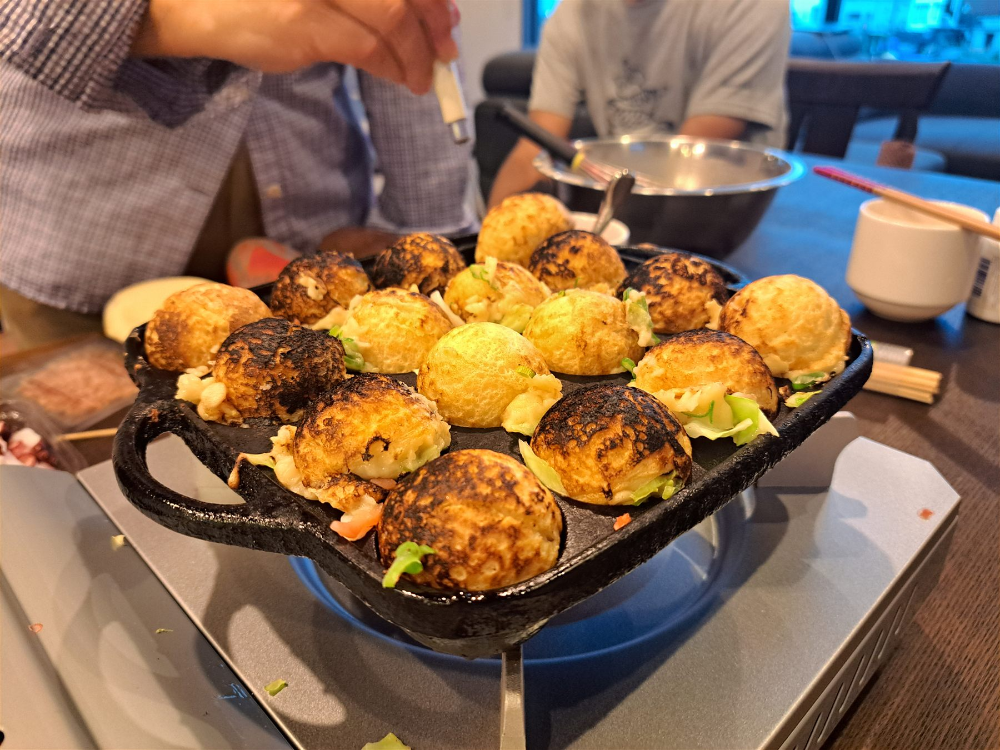
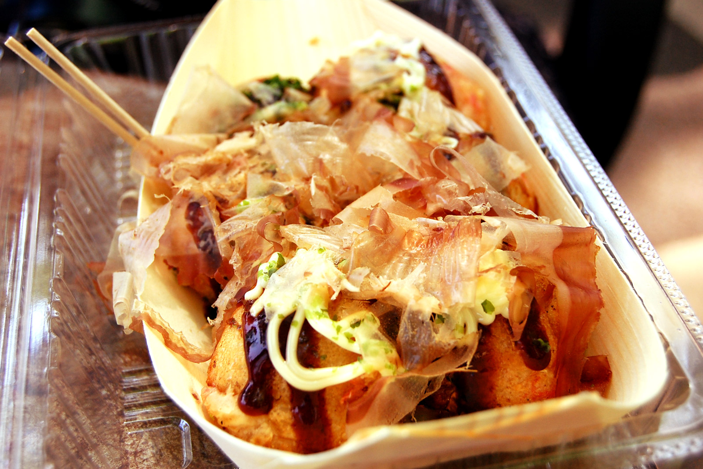
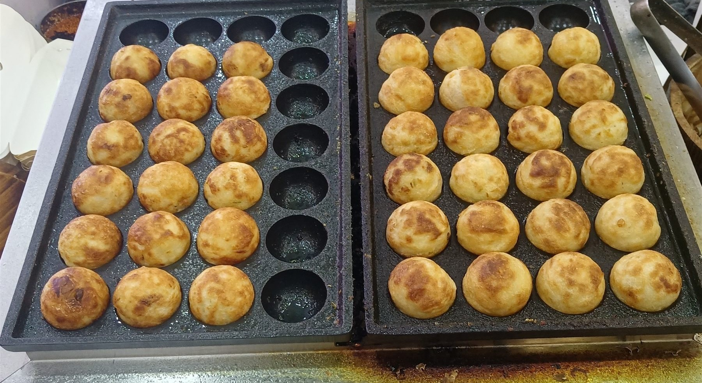
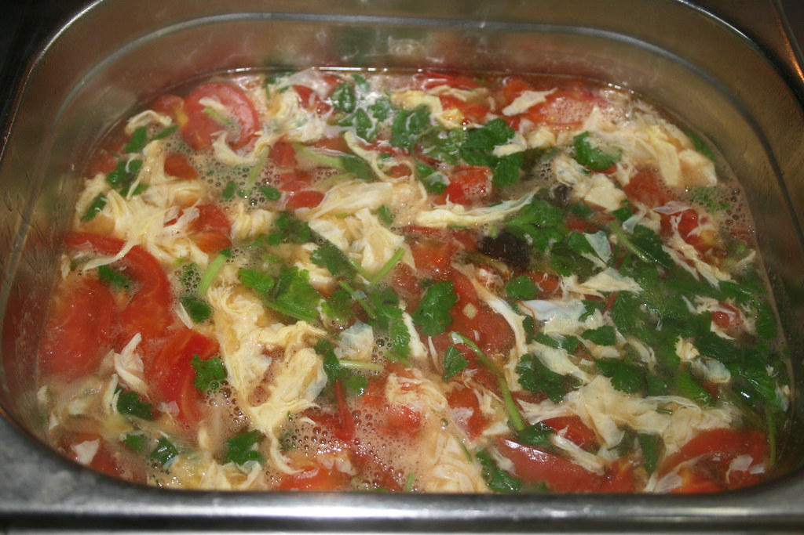

出店ストーリー
守谷の味を、
野田で。
「はげたこ」の本店は、茨城県守谷市にあります。
2025年6月2日、野田市に2号店として新しく店を構えました。
オープン初日には、守谷本店のスタッフも野田店に駆けつけ、 本店と息の合った連携のなかでこの新しい店舗はスタートしました。
まだ開店したばかりのお店ですが、少しずつ常連のお客様が増えてきています。 守谷で育まれてきた味を、この野田の地でも大切に焼き続けています。
本場大阪たこ焼き
はげたこ 野田店


出店ストーリー
「はげたこ」の本店は、茨城県守谷市にあります。
2025年6月2日、野田市に2号店として新しく店を構えました。
オープン初日には、守谷本店のスタッフも野田店に駆けつけ、 本店と息の合った連携のなかでこの新しい店舗はスタートしました。
まだ開店したばかりのお店ですが、少しずつ常連のお客様が増えてきています。 守谷で育まれてきた味を、この野田の地でも大切に焼き続けています。

こだわり
関東でたこ焼きというと、外はカリッと香ばしい「揚げ焼き」スタイルが主流です。 「はげたこ」がお出しするのは、大阪伝統のふわとろスタイル。 出汁の効いた生地をじっくり焼き上げることで、外はふんわり、中はとろとろに仕上げます。
焼きたては、箸で持ち上げるのが大変なほど中がとろとろ。 一口ほおばると、出汁の旨みがじゅわっと広がります。
このとろけるような食感を実現するため、焼き上がりまでは15〜20分ほどお時間をいただいています。 お電話でのご予約がおすすめです。
お電話で予約する 04-7190-5987
おもてなし
「はげたこ」では、焼き上がりをお待ちいただく間も、 できるだけ心地よく過ごしていただけるよう心がけています。
「客を大事にしてくれている」というお声をいただいています。
お客様の声
「待ち時間には呼び出しベルと卵スープをいただき、同行者の有無まで気にかけてもらいました。焼きたてはとろけるようにふわふわで、細やかな気配りに感動しました。」
― ご来店のお客様
「事前に電話予約をしてから伺うとスムーズでした。関東で多い揚げ焼きとは違う、大阪ならではのふわとろ食感が印象的です。」
― ご来店のお客様
「トッピングが豊富で迷うほどでしたので、コレ!!セットを注文しました。タレなしでも生地そのものが美味しく、組み合わせの楽しさを感じました。」
― ご来店のお客様
「出汁の効いた生地は、箸で持つのが大変なほど熱々でとろとろ。電話口でも店頭でも話しやすい接客で、卵スープのサービスにも心が温まりました。」
― 野田市周辺にお住まいのお客様
ご来店の流れ
焼き上がりまでの目安は15〜20分です。
呼び出しベルをお渡ししますので、お待ちの間はご自由にお過ごしください。お待ちいただく間、卵スープをサービスさせていただくこともあります。
呼び出しベルの合図で、お店までお越しください。
※混雑状況により、焼き上がりまでのお時間が前後する場合がございます。
アクセス・駐車場
県道17号線から「たかのチェーン野田店」横の通りへ入り、50mほど進んだ右側に、 「はげたこ」のシールが貼られたコーンが目印の専用駐車場が2箇所ございます。 お車でお越しの際は、こちらの駐車場をご利用ください。
一部の写真はフリー素材のイメージです。実際の店内・お料理写真は貴店ご提供のものに差し替えます